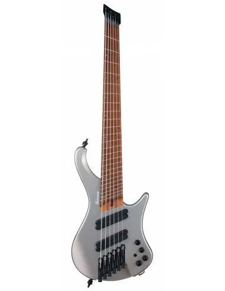
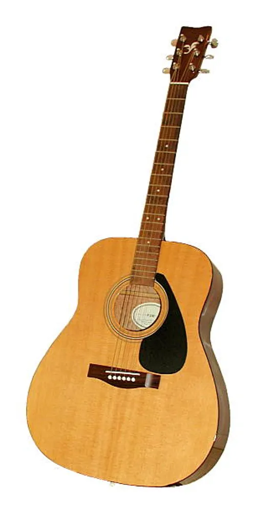

Bajo Eléctrico
Bajo Eléctrico Palmer MGM 6to bajo eléctrico es un instrumento de cuerda que se utiliza principalmente en géneros como el rock, el jazz y el funk. Su función principal es proporcionar la línea de bajo y el ritmo en una banda. 399.99

Guitarra Eléctrica
Guitarra Eléctrica Fender Stratocaster La guitarra eléctrica es un instrumento de cuerda que se utiliza en una amplia variedad de géneros musicales, desde el rock y el blues hasta el jazz y el pop. 599.99

Guitarra Acústica
Guitarra Acústica Martin D-28 La guitarra acústica es un instrumento de cuerda que se utiliza en una amplia variedad de géneros musicales, desde el rock y el blues hasta el jazz y el pop. 799.99